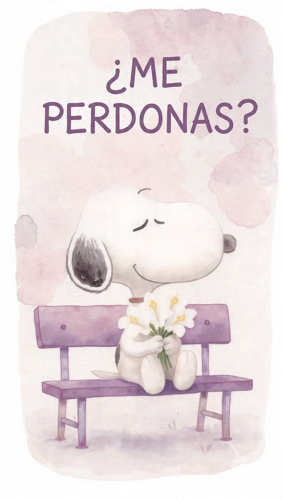

Oye, disculpa por lo que pasó hace rato. Disculpa por decirte mentirosa, se que tú no lo eres, solo que pues como yo te tengo mucha confianza y así pues yo te creo todo lo que me dices y pues tú me habías dicho que soy insano y pues yo sentí muy bonito que dijeras eso y pues como hace rato dijiste "De tu casa" yo dije que me mentiste porqué pues tú me habías dicho que soy insano y pues asi.
Fue un malentendido, no mire bien los mensajes o no los entendí. Disculpa por eso ya no te volveré a decir mentirosa.
¿Me perdonas? 💕